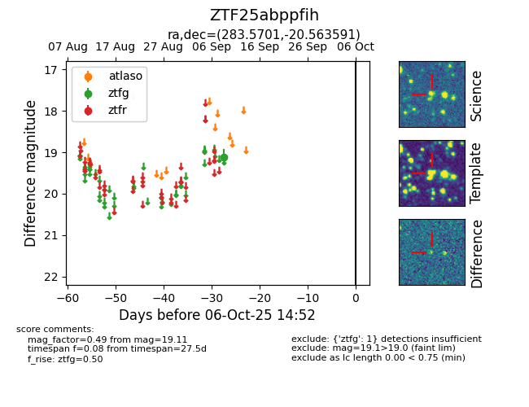

FINK: ZTF25abppfih
Lasair: ZTF25abppfih
ALeRCE: ZTF25abppfih
ZTF25abppfih (ztf,fink)
equatorial (ra, dec) = (283.5701,-20.56359)
galactic (l, b) = (14.7595,-9.81672)

last ztfg=19.11
1 ztfg detections